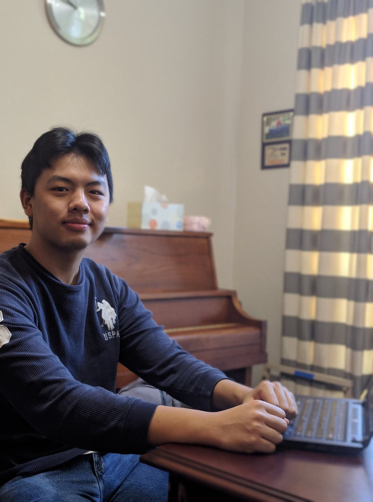
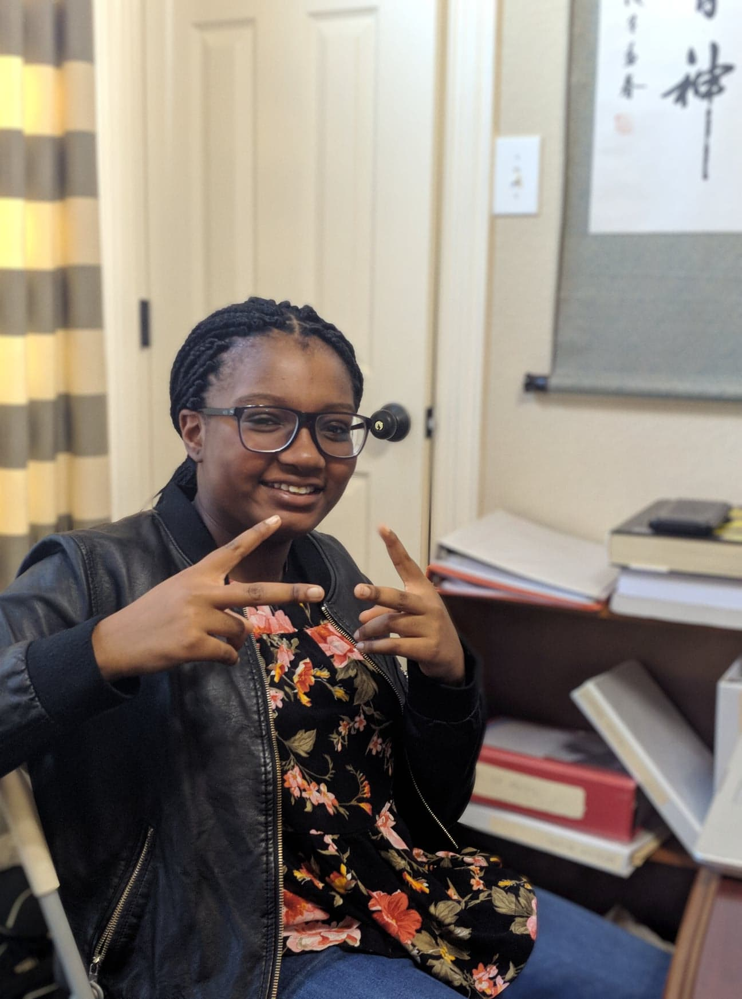

Founder and Lead Manager
Daniel is a passionate advocate of open source, especially where it applies to software development and education. He first chanced across Linux in 7th grade, and since then he's gone on to develop websites, spin up operating systems, and intern at the satellite communications company Wavelab. Brought up in post-Katrina Baton Rouge, he hopes he can nurture similar passions in a new generation of coders.
Since entering high school, he's become a USACO Gold-ranked competitor, and placed at several international hackathons for his front-end web development work. He plans to pursue computer science, Linux, and design in college.
In his free time, Daniel plays the viola, studies music, competes on his school's Science Olympiad team, and watches (probably too much) YouTube.

Educational Coordinator
Ryan has been a self-proclaimed tech enthusiast since 5th grade, when he built his first computer, heavily inspired by Linus Tech Tips. Ever since then, he has expeditiously expanded his interests into different sectors of computer science and engineering. Grateful for the educational opportunities despite growing up in disadvantaged areas of Houston, he wishes the same opportunities for others. Outside of his busy school life, Ryan plays the violin in the school orchestra, and zealously listens to classical music. He's also a possible tech hoarder.
Since entering high school, Ryan has become a USACO Gold-ranked competitor, and won several hackathons for his back-end skills. In college, he plans to continue his studies in computer science and electrical engineering.

Administrative Associate
Danielle is a junior in high school who started computer science in her freshman year. During this time, she learned Java in the AP Computer Science A class, and has programmed many popular board games, such as UNO and Seven Wonders.
Because of the past couple of years, she wants to be able to pass on the joy and complexity of computer science to children who have limited opportunities due to financial hardships.